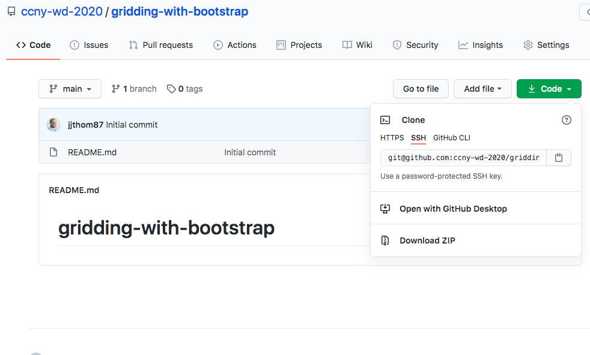
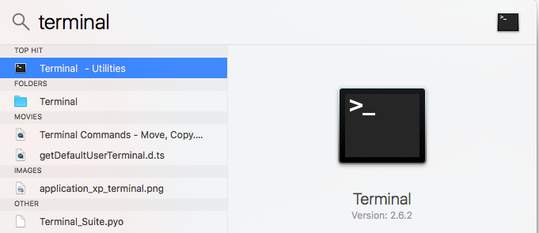
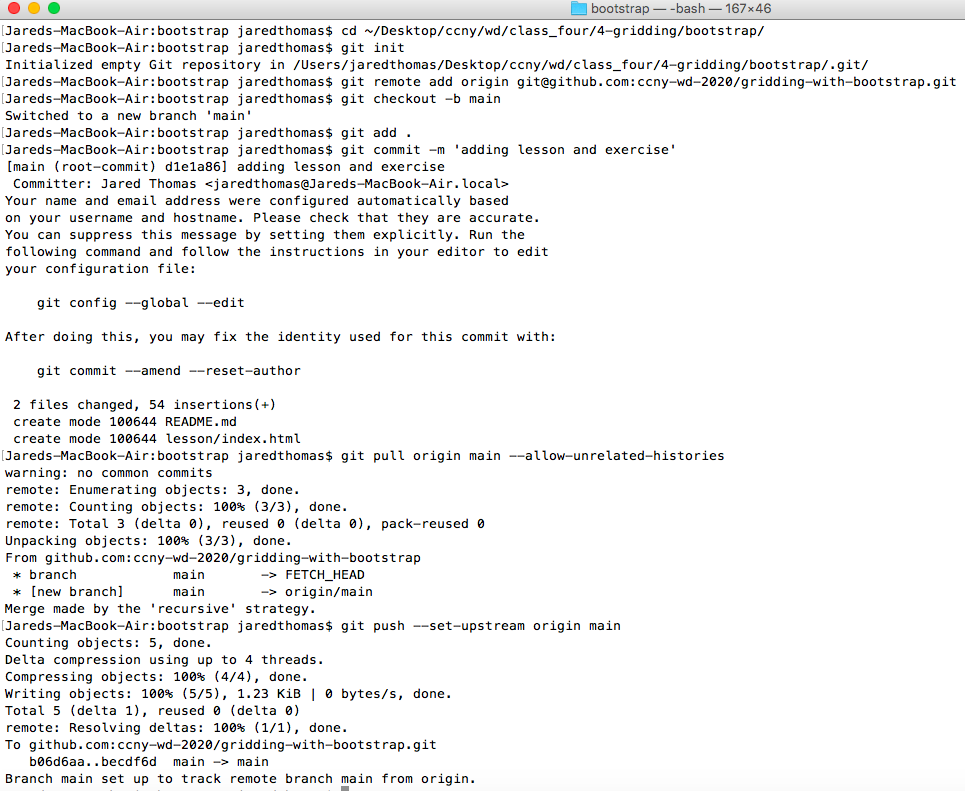
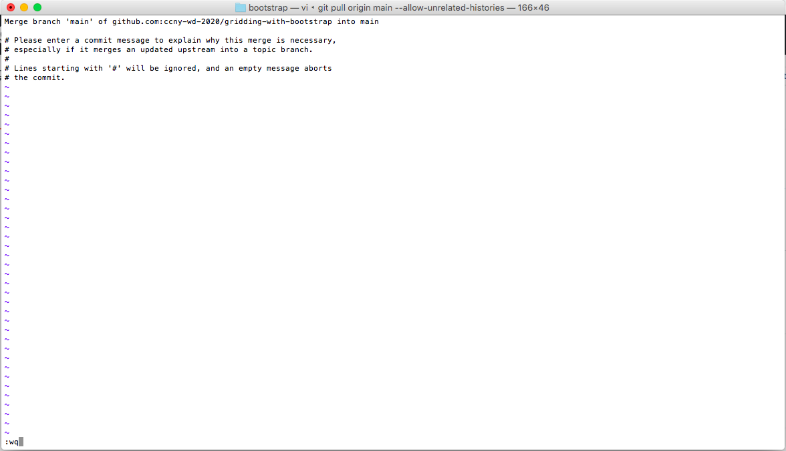
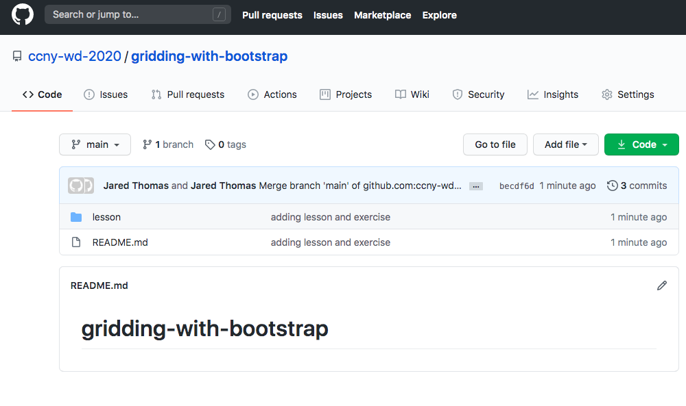

Creating a Github Repository with a README
-
Once you have created your github repository, click the green "Code" button and copy the ssh url. It should look like: git@github.com:{github_username}/{project_name}
 -
Open up your terminal (mac) or git bash (windows)
Mac
Windows
TBD
-
Commands are as follows
- cd ~/directory/to/where/your/work/is
- git init
- git remote add origin {github_repository_url}
- git checkout -b main
- git add .
- git status
- git commit -m 'adding changes'
- git pull origin main --allow-unrelated-histories
- git push --set-upstream origin main
 -
At the git pull origin main --allow-unrelated-histories step in step3, to get out of the editor, please "escape", and then ":wq", and then enter. View the bottom left of the editor in the image below to see exactly what's done to get out of there.
Reference
 -
This is what your github repository should look like. My "exercise" folder was not included because it was empty.
